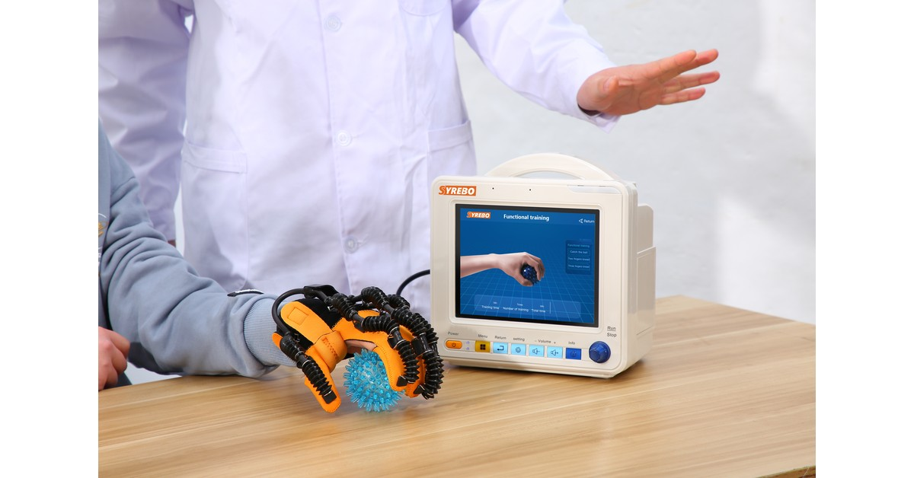

„Syrebo“ klinikinių tyrimų rubrika
Įrodymais pagrįstos robotinių pirštinių reabilitacijos tyrimų apžvalgos
Iš straipsnio
火针联合机器人手套镜像疗法对脑卒中后手及上肢功能障碍影响
张伟、黄文婷、崔晓阳、郑婵娟、陈焱强
亚太传统医药, 2024;20(9):73–78
DOI: 10.11954/ytctyy.202409014
Šioje straipsnio kortelėje straipsnio iliustracijos nerodomos.

Pagal atsitiktinių skaičių lentelę buvo paskirstyta 113 žmonių. Trys pasitraukė, o 110 buvo įtraukti į analizę. Abi grupės gavo įprastą reabilitaciją ir veidrodžio terapiją su robotine pirštine. Stebėjimo grupė papildomai gavo kaitinamų adatų terapiją. Po keturių savaičių šios grupės kelių matų rezultatai buvo didesni. Palyginimas susijęs su kaitinamų adatų pridėjimu prie bendros programos; jis nenustato vien pirštinės poveikio.
Konkretų šiame tyrime naudoto įrenginio veikimo būdą dar reikia patikrinti pagal visą straipsnį. Kaitinamų adatų terapija yra papildoma intervencija; jos konkretų taikymo grafiką reikia patikrinti visame straipsnyje. Kai abiem grupėms taikoma veidrodžio terapija robotine pirštine, grupių palyginimas susijęs su pridėta intervencija, o ne su pirštinės palyginimu su programa be jos.
Pirmiausia svarbu, ar kontrolinė grupė jau naudoja prietaisą. Taip, naudoja. Todėl išvada susijusi su intervencijų deriniu.
Rankos ir viršutinės galūnės priežiūra po insulto gali apimti vaistus, įprastą reabilitaciją ir rankos treniruotes vienu metu. Kai abiem grupėms jau taikoma veidrodžio terapija robotine pirštine, jų palyginimas padeda įvertinti papildomos intervencijos indėlį. Jis nelygina pirštinės su programa, kurioje ji nenaudojama. Kaitinamų adatų terapija yra papildoma intervencija, todėl rezultatas susijęs su deriniu.
Žurnalo santraukoje aprašomas atsitiktinių imčių tyrimas žmonėms, kurių rankos ir viršutinės galūnės funkcija sutrikusi po insulto. Abi grupės gavo įprastą reabilitaciją ir veidrodžio terapiją su robotine pirštine; stebėjimo grupė papildomai gavo kaitinamų adatų terapiją. Rezultatai įvertinti po keturių savaičių. Nuotrauka yra prekės ženklo iliustracija, o ne patvirtinta tyrimo prietaiso nuotrauka.
Abi grupės gavo įprastą reabilitaciją ir veidrodžio terapiją su robotine pirštine. Stebėjimo grupė papildomai gavo kaitinamų adatų terapiją. Viešoje santraukoje nenurodytas pirštinės gamintojas ar modelis.
Vertinti rankos motorinės funkcijos Fugl-Meyer balai, didžiausias lenkimo ir tiesimo sukimo momentas, vidutinė galia, bendras darbas, vidutinė kvadratinė vertė, ko-kontrakcijos santykis ir modifikuotas Barthel indeksas kasdienei veiklai. Nuotrauka yra prekės ženklo iliustracija, nepatvirtinta kaip tyrimo prietaiso vaizdas.
Tyrimo planas
Paskirstyta pagal atsitiktinių skaičių lentelę. Abi grupės gavo įprastą reabilitaciją ir veidrodžio terapiją su robotine pirštine. Stebėjimo grupė papildomai gavo kaitinamų adatų terapiją. Tai palygina pirštinę su adatomis ir pirštinę, o ne pirštinę su programa be jos.
Dalyviai ir tvarkaraštis
Iš 113 paskirstytų žmonių trys pasitraukė. Analizuota po 55 žmones kiekvienoje grupėje, iš viso 110. Santraukoje nurodoma, kad vertinimai atlikti po keturių savaičių.
Pagrindiniai rezultatai
Žurnalo santraukoje nurodoma, kad po keturių savaičių abiejose grupėse pagerėjo didžiausias sukimo momentas, vidutinė galia, bendras darbas, rankos Fugl-Meyer balas ir modifikuotas Barthel indeksas, o vidutinės kvadratinės vertės sumažėjo. Stebėjimo grupės pirmųjų matų rezultatai buvo didesni, o vidutinės kvadratinės vertės mažesnės nei kontrolinės grupės. Autoriai nenurodo aiškaus ko-kontrakcijos santykio pokyčio. Išsamias vertes reikia patikrinti visame straipsnyje.
Žurnalo santraukoje veidrodžio terapija su pirštine aprašoma kaip sudėtinės programos dalis. Kadangi abi grupės naudojo pirštinę, šis palyginimas neįrodo, kad vien pirštinė buvo geresnė už kontrolę. Stebėjimo grupė taip pat gavo kaitinamų adatų terapiją.
Jei įstaiga tomis pačiomis savaitėmis skiria veidrodžio treniruotes su pirštine ir kitą terapiją, apraše turi būti nurodyta, ar abi grupės naudojo pirštinę. Santraukoje pranešama, kad abiem grupėms naudojant robotinę pirštinę, kaitinamų adatų terapiją papildomai gavusios grupės keli rezultatai po keturių savaičių buvo didesni. Šio skirtumo negalima priskirti vien pirštinei; ilgalaikei stebėsenai įvertinti būtinas visas straipsnis.
Ribotumai Žurnalo santraukoje pateikiami keturių savaičių rezultatai; ilgesnę stebėseną ir kitus tyrimo ribotumus būtina patikrinti visame straipsnyje. Stebėjimo grupė gavo papildomą intervenciją, todėl skirtumo negalima priskirti vien pirštinei. Rezultatai neperrašomi kaip produkto veiksmingumo procentas.